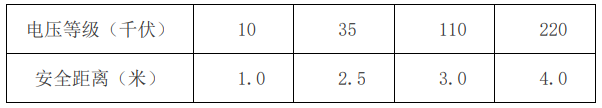

1、电工必须掌握必要的电气知识，并经考试合格，持证上岗，在准许的工作范围内作业；工作前，对施工现场周围环境进行了解，工作负责人向参加工作全体人员交代任务内容、施工方法、安装措施及注意事项，在全体工作人员清楚后，才能开始工作；工作负责人在分配任务时，要掌握和了解工作人员的身体健康、情况和思想情绪，以便适当分配工作，工作人员（包括负责人）上班时不许喝酒。 2、必须严格执行《施工现场临时用电安全技术规范》（JGJ46-2005）等现行规范、标准、规程；持学习证人员不得独立作业，应在持操作证人员的监护下作业；按规定佩戴个人防护用品，使用和保管专用工具；电工不准一人单独工作，雨天工作时，24V以上的电压要有绝缘设备，方准工作。实习电工不准带电工作，未经负责人许可，不准上岗工作。 3、在低压线双项工作时，原则上应断电工作，如有特殊情况，必须要带电作业时，应注意下列事项： 3.1必须穿绝缘鞋，禁止穿潮湿衣鞋，禁止带金属、金表链等物品； 3.2必须将周围的电线盖上橡皮管、橡皮布或其他绝缘物后，确认安全后方可工作； 3.3工作时，应以单项工作为原则，不准同时接触二项； 3.4不准任意割断任何电线，在另一线先行跨接时，再行切断，以防产生火花，发生事故。 4、电工服装，力求简单利落，扣好衣扣，带好工作帽。禁止穿袖衫，短裤及光脚工作；耐压绝缘工具，每隔半年应试验检查一次，不符合规定者，不得继续使用，工作皮带也要做定期检查。 5、必须严格执行《施工现场临时用电安全技术规范》（JGJ46-2005）等现行规范、标准、规程；持学习证人员不得独立作业，应在持操作证人员的监护下作业；按规定佩戴个人防护用品，使用和保管专用工具。 6、雷暴雨时，无避雷装置的设备和线路，必须停电，并将各个油开关截断；大风雨时，禁止上杆工作，巡查线路时，应站在上风，并且不能靠近电杆，位置与线路的距离要保持一倍以上；停电工作时，应将附近电源的油开关拉开，经过放电后，再用检电器检查线路上是否存有电压，同时将“不可推上”的危险牌挂在开关设备的危险处；变压处及油开关附近，禁止点火、使用喷火灯和生炉子，以防火灾。 7、严禁带负荷拉合隔离开关及跌开式熔断器；雨天不得进行室外高压作业；变压器停电时，先停负荷侧，后停电源侧，送电时，先送电源侧，后送负荷侧，操作单极隔离开关及跌开式熔断器，停电时，先拉中间相，后拉两边相；送电时，先合两边相，后合中间相；在变台上进行检修作业时，必须完成下列安全技术措施：停电、验电、挂临时接地线、挂标示牌和装设临时遮栏。 8、上杆前，要检查三角胺绳子是否牢固，皮带有否脆裂伤痕，带环、眼处、钉头有否豁裂等现象；检查电杆的入土深度和土地紧实情况，木质电杆有否腐朽等情况，必要时，须打绑桩后，再上杆工作；高空工作人员上下传递工具材料时，必须用绳或布袋吊送；不得随意抛掷，工作区域内，禁止闲人进入；在杆上进行作业时，皮带及胶绳不许拴在电杆横档及电杆尖，如遇特殊情况，经过仔细检查并经现场负责人同意后，方可采用。 9、临时架空电缆线路及变台作业时，开挖电杆基坑作业前，应与有关单位取得联系，探明地下物状况并采取防护措施；在现况电力、通讯电缆两米范围内和现况燃气、热力、给水、排水等管道1米范围内必须在主管单位人员的监护下人工开挖；搬运电杆时，必须统一指挥，协调一致，互相呼应。使用车辆搬运电杆时，必须将电杆绑扎牢固，并保持平衡；立、撤电杆作业必须设专人指挥，明确联系信号和人员分工，必要时设专人监护和疏导交通；使用汽车起重机立、撤电杆时，应与信号工密切配合，吊点应在电杆重心的上方，距杆根的距离应大于杆长的0.4倍加0.5米；人工立杆应使用两副架腿，杆轴向与架腿顶部支点应保持同一直线，并位于架腿两支腿的中心，架腿受力应均衡；基坑填平夯实后方可拆除支腿；立水泥杆时，应采取防滑措施；立、撤电杆时，应设置半径为1.2倍杆长的作业区域，无关人员不得进入作业区域。立杆作业时，坑内严禁有人；蹬杆前应检查电杆埋设的牢固性，确认安全后方可蹬杆；杆上作业时，上下传递工具和材料应用小绳，严禁抛掷。小绳不得系在安全带上；杆上作业人员使用的工具和材料，应放在工具袋内，较大的工具应用绳子栓在牢固的构件上。 10、邻近其它带电线路作业时，作业人员与带电线路的安全距离应不得小于下表中的数据。邻近带电路线或带电设备放、紧线作业时，应将导线接地，并用小绳栓好，指定专人拽住；紧、撤线前应先检查拉线、拉桩、确认安全后方可作业。在无拉线、拉桩的电杆上紧线，必须设置临时拉线。 作业人员与带电线路的安全距离  11、不论任何偏僻或高空地点，线路接头处都要用绝缘胶布包好，一切电器动力设备都要接地线；校检有齿轮箱的设备时，必须有专人控制按钮或开关，以免他人误触发生事故，必要时将电源切断校检；上工作梯时，应检查横撑等是否牢固，下端须有限制开度的挂钩，4米以上的高梯要拉晃绳或人扶着，上端靠杆子或管子（单梯）应以绳绑牢。 12、发现高压线导体接地时，除对触电者用安全方法抢救外，必须遵守下列规定： 12.1室内设备接地时，其周围4－5米内不得站人，室外设备接地时，周围8米内不得站人； 12.2电工不得随便上杆，除立即联系变电所或附近油开关停电外，并向上级报告，事故地点要有人监视，以防他人接触。 13、检查线路设备时，如中途因故离开，再回来工作时，必须详细查明情况，充分了解后，方可继续工作；各开闭器因工作需要而被截断时，应设明显标志，必要时派专人看管；超过380伏以上的电压时，不得带电作业。 14、工作时使用手灯、电钻等工具时，必须先将地线接好后再用，其线不得绕在手上，用电钻时要带绝缘手套，工作灯不得超过36伏；各油开关及变压器应经常检查其接地线是否良好；安装或检修的电器设备，在进行检验时，凡是由库内新领的设备必须达到5个兆欧姆，在用的电器设备应达到0.5兆欧姆。 15、现场负责人如因情况不明，分配工作不当，工作人员应提出意见，负责人再作合理分配，如指挥失误，对人身及设备显有危害时，工作人员可拒绝执行，并立即报告上级。 16、电工应熟悉触电事故应急救援预案以及紧急救护（如：人工呼吸等）知识和方法，并经常进行练习。